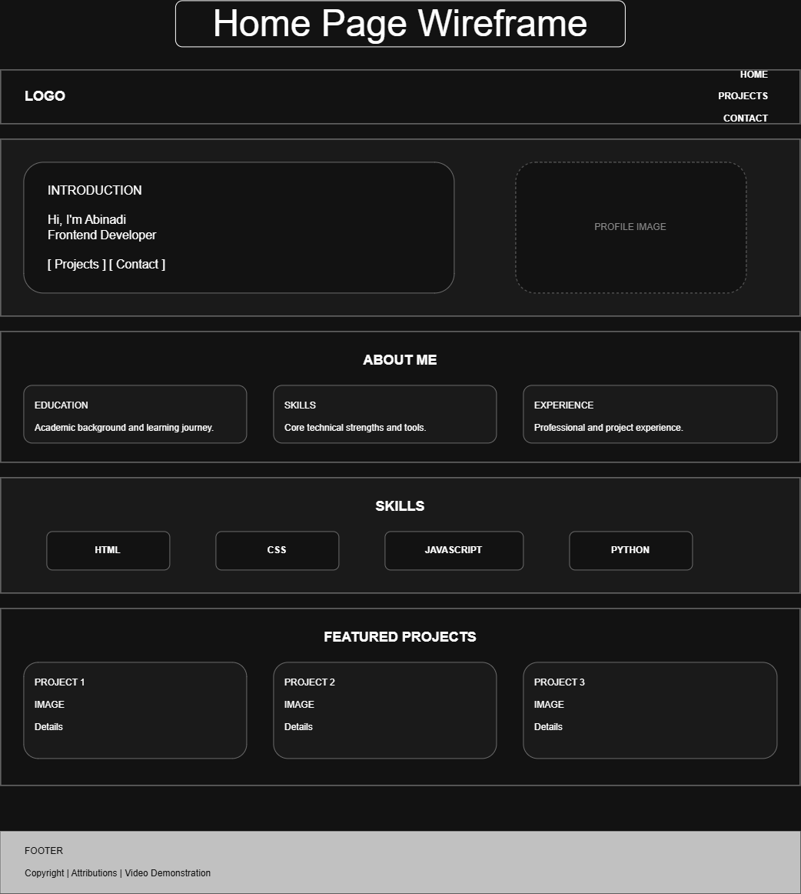
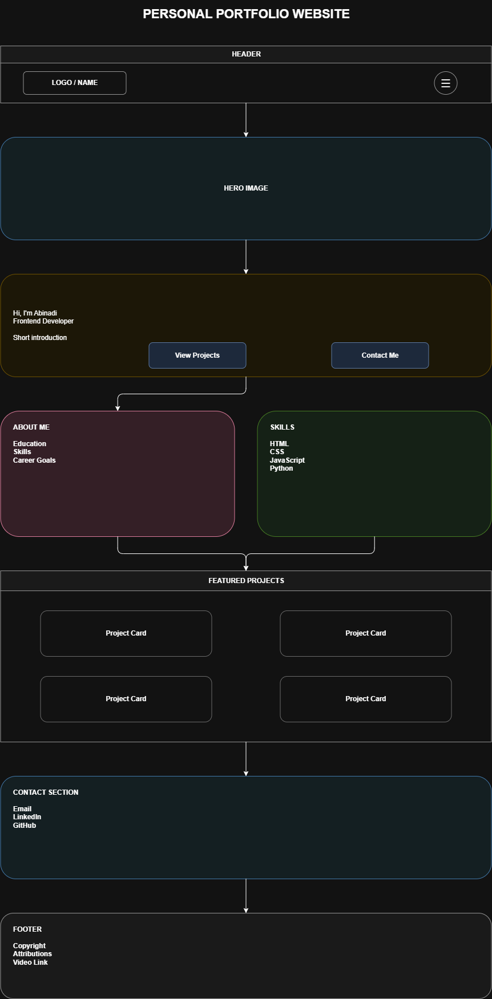

Site Name
AM@17 Dev Portfolio
AM@17 represents my personal developer brand. "AM" represents my initials (Abinadi Momoh), while "17" makes the name unique and memorable. The name reflects my journey in frontend development and creates a professional identity for my portfolio.
Site Purpose
The purpose of this website is to showcase my skills, education, projects, and experience as a Software Development student and aspiring Frontend Developer. The website will provide information about my technical abilities, completed projects, and ways to contact me for professional opportunities.
Scenarios
- What projects has Abinadi created and what technologies were used?
- How can I contact Abinadi for an internship or frontend development opportunity?
- What programming languages and skills does Abinadi have?
Color Scheme
The website will use an Emerald Ink and Champagne color palette. These colors create a professional and modern appearance while representing growth, creativity, and technology.
- Emerald Ink (#064E3B) - Used for the navigation bar, footer, main headings, buttons, and important design elements.
- Champagne (#F7E7CE) - Used for page backgrounds, content sections, and cards to create a warm and clean visual appearance.
- Soft Gold (#D4AF37) - Used as an accent color for hover effects, icons, highlights, and call-to-action elements.
- Dark Text (#111827) - Used for paragraphs and general content to maintain readability and accessibility.
Typography
The website will use modern and readable fonts that support a professional developer portfolio design.
- Poppins - Used for headings, navigation links, and buttons. This font provides a modern and professional appearance.
- Open Sans - Used for body text, paragraphs, descriptions, and forms. It improves readability across different screen sizes.
- Roboto Mono - Used for code examples, programming languages, and technical skill labels.
Wireframes
The home page wireframe demonstrates the responsive layout of the portfolio website. The mobile design uses a single-column layout optimized for small screens, while the desktop design uses multiple columns to improve content organization. The layout includes navigation, hero introduction, about section, skills, featured projects, contact section, and footer.
Desktop

Mobile
